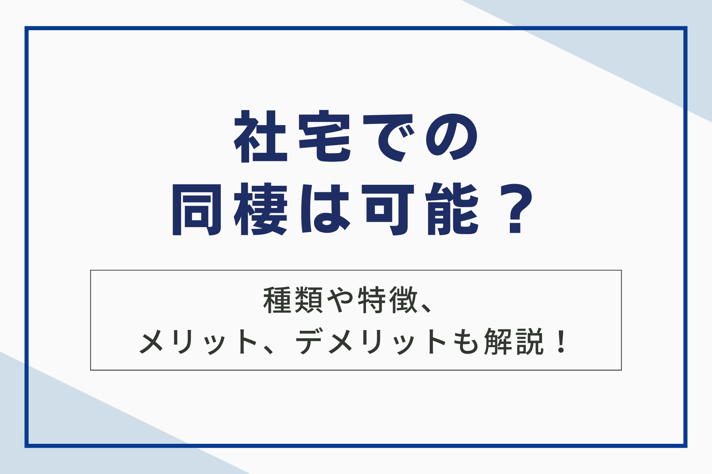

社宅同棲を考えているカップル必見！この記事では、社宅での同棲が可能かどうか、その種類や特徴、メリット・デメリット、注意点、そして結婚前に考えるべき点まで徹底解説します。
会社の規定によってルールは様々なので、事前に確認する方法や問い合わせ先も紹介。同棲生活を始める前に、この記事で必要な情報をしっかりチェックして、安心して新しい生活をスタートさせましょう。

社宅での同棲は可能？
社宅での同棲可否については会社の規定によるため、事前に確認が必要です。無断で同棲が発覚した場合、ペナルティが課される可能性があります。
また、同棲が可能な場合でも、婚約などの一定の条件を満たしている必要があるケースもあります。詳しくは、各社の担当部署に事前に問い合わせてみてください。

社宅の種類とそれぞれの特徴
社宅にはいくつかの種類があります。それぞれにメリット・デメリットがあるので、自身のライフスタイルに合わせて検討する必要があります。
借り上げ社宅
借り上げ社宅とは、会社が従業員の住居として、不動産会社などから賃貸物件を借り上げて従業員に貸し出す制度です。
会社が借主となり、従業員がその転借人となります。借り上げ社宅には、会社が費用負担をすることで、従業員の家賃負担を軽減する目的があります。
| 項目 | 説明 |
|---|---|
| 契約形態 | 会社が物件オーナーと賃貸契約を結び、会社が従業員に転貸する |
| 所有者 | 不動産会社等 |
| 費用負担 | 会社が一部または全部負担 |
| 入居対象 | 通常、従業員 |
借り上げ社宅を利用するにあたっては、それぞれの企業の規定をよく確認する必要があります。
社有社宅
社有社宅とは、企業が所有している建物を社員に賃貸するタイプの社宅です。会社が直接物件を所有しているため、借り上げ社宅と比べて家賃設定に自由度があり、より安価に設定されている場合が多いです。
社有社宅は、会社が自ら所有・管理しているため、同棲に関する規定も会社独自で定めているケースがほとんどです。そのため、同棲の可否は会社によって大きく異なります。
中には、結婚を前提としたカップルに限り同棲を認めている会社もあります。しかし、社有社宅は社員とその家族のための住宅という位置づけであることが多く、同棲を認めていない会社も多いです。
社有社宅への入居を検討している場合は、事前に会社の担当部署に確認を取り、同棲に関する規定を確認することが重要です。社内規定に違反して同棲が発覚した場合、ペナルティが科される可能性もあるため注意が必要です。
社員寮・独身寮
社員寮・独身寮は、主に新入社員や単身赴任の社員のために提供される住居です。会社によってその形態は様々ですが、大きく分けて「独身寮」と「社員寮」の2種類があります。
| 寮の種類 | 対象者 | 特徴 | 同棲 |
|---|---|---|---|
| 独身寮 | 独身者 | 共有スペースが多い | 不可 |
| 社員寮 | 単身者・家族帯 | 間取りが様々 | 会社規定による |
独身寮の場合、規約上、同棲は認められていません。これは、独身寮の目的が社員の福利厚生の一環として、単身者に安価で安全な住居を提供することにありまる。
これは、同棲を許可することでその趣旨が損なわれる可能性があるためです。また、プライバシーの確保やセキュリティの面からも、同棲は難しいと言えるでしょう。
社員寮の場合は、独身寮に比べて同棲に対する規定は緩やかな場合もありますが、基本的には許可されていないケースが多いです。家族帯の社員も入居可能な社員寮であっても、同棲を認めているかどうかは、各会社の規定によって異なります。
同棲を希望する場合は、事前に会社の担当部署に確認することが必須です。無断で同棲した場合、規約違反となり、最悪の場合、退寮処分となる可能性もあります。
家族向け社宅・カップル向け社宅
家族向け社宅はその名の通り、社員の家族が一緒に住むことを想定して提供されています。結婚している、もしくは婚約しているカップルであれば、同棲を認められるケースが多いです。
ただし、婚約中であることを証明する書類の提出を求められる場合や、入籍までの期限が設けられている場合もありますので、事前に会社の規定を確認することが重要です。
一方、カップル向け社宅は、まだ結婚していないカップルが同棲することを前提に提供される物件です。企業によっては、カップルで同じ会社に勤務している場合に限り利用できるなど、条件が定められていることがあります。
| 社宅の種類 | 対象 | 同棲の可否 | 注意点 |
|---|---|---|---|
| 家族向け社宅 | 既婚者、婚約者 | 多くの場合可能 | 入籍期限や証明書の提出が必要な場合あり |
| カップル向け社宅 | 結婚していないカップル | 可能 | 企業独自の規定あり |
このように、社宅の種類によって同棲の可否や必要な条件が異なります。同棲を希望する場合は、それぞれの社宅の規定をよく確認し、不明な点は会社に問い合わせることが大切です。
社宅における同棲のケースと注意点
規定で認められている場合
社宅によっては、同棲が明確に認められている場合があります。これは、主に福利厚生の一環として、結婚を前提としたカップルやすでに婚姻関係にあるが別居を余儀なくされている夫婦などを対象としたものです。
| 社宅の種類 | 同棲の可否 | 対象者 |
|---|---|---|
| ファミリー向け社宅 | 〇 | 婚約者、夫婦 |
| カップル寮 | 〇 | 社内カップル |
ファミリー向け社宅の場合、婚約届の提出や入籍予定日の証明など、所定の手続きが必要となるケースが一般的です。カップル寮は、主に工場や製造業界などで見られる制度で、社内カップルが共同生活を送ることを前提とした寮です。
これらの社宅では、家賃が割安に設定されている場合が多く、経済的な負担を軽減しながら共同生活を送ることができます。また、職場に近い場所に位置していることが多いため、通勤時間の短縮にも繋がります。
黙認されている場合
社宅によっては、同棲に関する規定が曖昧であったり、暗黙の了解で同棲が容認されているケースがあります。
ただし、このような場合でも注意が必要です。会社の担当者から口頭で許可を得ていたとしても、後々トラブルに発展する可能性も否定できません。
例えば、会社の規約上は同棲が禁止されているにもかかわらず、担当者が個人的な判断で許可を出していた場合、担当者の異動などによって状況が変わる可能性があります。
また、同棲していることが発覚した場合、会社からペナルティを受ける可能性もゼロではありません。黙認状態での同棲は、常にリスクが伴うことを理解しておきましょう。
許可を得た担当者名、日付、具体的なやりとりなどを記録しておくことをおすすめします。
規約違反となる場合
社宅の規約で同棲が禁止されているにもかかわらず、無断で同棲を行った場合、様々なペナルティが科せられる可能性があります。最悪のケースでは、社宅の契約解除、つまり強制退去となることもあります。
そうなると、新たに物件を探さなければならず、家賃負担の増加は避けられません。また、会社からの信用を失い、人事評価に悪影響を及ぼす可能性も否定できません。
社宅の種類によって、発覚のリスクも異なります。社有社宅の場合は、同じ会社の人が周囲に住んでいるため、発覚のリスクは高くなります。借り上げ社宅であっても、周囲の住民や管理会社から会社に連絡が入り、発覚する可能性はゼロではありません。
社宅の規約違反は、自分自身の生活だけでなく、会社での立場にも大きな影響を与える可能性があります。無断での同棲は絶対に避け、社宅の規約を遵守することが重要です。
確認方法と問い合わせ先
社宅に同棲できるかどうかは、会社の規定によって異なります。入居資格や同棲の可否など、事前に確認することが重要です。確認方法は主に以下の通りです。
| 確認方法 | メリット | デメリット |
|---|---|---|
| 電話 | 直接担当者に聞けるため、疑問点をすぐに解消できる | 担当者が不在の場合、確認に時間がかかる場合がある |
| メール | 自分の都合の良い時間に問い合わせできる | 返信に時間がかかる場合がある |
| 社内ポータルサイト | 情報が整理されている場合が多い | 最新情報でない可能性もある |
| 福利厚生担当部署 | 専門的な知識を持った担当者に聞ける | 直接聞きづらい場合もある |
| 配属先の上司・先輩 | 社内の雰囲気なども含めて聞ける | 聞きづらい場合もある |
内定承諾後、なるべく早く確認しておきましょう。配属先が決まっている場合は、配属先の担当者に確認するのがスムーズです。社内ポータルサイト等で確認できる場合もありますが、情報が古くなっている可能性もあるため注意が必要です。
福利厚生担当部署や、社宅を管理している部署があればそちらに問い合わせるのも良いでしょう。不明な点や疑問点は、電話で直接確認するのが確実です。メールでの問い合わせも可能ですが、返信に時間がかかる場合があります。
社宅同棲のメリットは5つ
社宅で同棲することのメリットは、金銭面・生活面含め様々なものがあります。主なメリットを5つ紹介していきます。
1.家賃負担の軽減
社宅に住む最大のメリットは、家賃負担が軽減されることです。会社によって負担割合は異なりますが、家賃の一部、もしくは全部を会社が負担してくれるケースもあります。
家賃が軽減されると、その分を貯蓄や趣味、自己投資などに回すことができます。
特に、収入が少ない若手社員や、これから結婚や出産を控えている方にとっては大きなメリットと言えるでしょう。
ただし、家賃負担がどの程度軽減されるかは、会社の規定や物件の種類によって異なります。入居前に、家賃の負担割合や光熱費の有無などを確認しましょう。
2.家具・家電付き物件の可能性
社宅、特に借り上げ社宅には、家具や家電が備え付けられている物件が存在します。これは、転勤者や単身赴任者にとって初期費用を抑えられ、すぐに生活を始められるという大きなメリットとなります。
家具家電付きの物件に住むことで、新生活に必要なものを揃える手間や費用を省くことができるため、経済的な負担を軽減できます。
ただし、備え付けられている家具家電の種類や数は物件によって異なります。事前に確認しておくことが大切です。入居前に、どのような家具家電が備え付けられているか、状態はどうかなどを確認することで、入居後の生活をスムーズに始めることができます。
3.職場へのアクセス良好
社宅は多くの場合、職場に近い場所に位置している、あるいは職場へのアクセスが便利なように配慮されています。
この立地の良さは、通勤時間を大幅に短縮できるという大きなメリットにつながります。通勤時間の短縮は、日々の生活にゆとりを生み出します。
例えば、朝はゆっくりと準備ができたり、夜は趣味や家族との時間を大切にできたりと、時間を有効活用できるようになります。また、満員電車でのストレスからも解放され、心身ともに健康的な生活を送れる可能性が高まります。
さらに、交通費の削減も見逃せないメリットです。毎月の交通費の負担が減ることで、家計の節約にもつながります。浮いたお金を貯蓄や趣味、自己投資などに回すことも可能です。
4.駐車場などの付帯設備
社宅には、駐車場以外にも様々な付帯設備が備わっている場合があります。これらの設備は生活の利便性を高めるだけでなく、経済的なメリットにもつながります。
例えば、駐車場が無料または割引価格で利用できる場合、毎月の支出を抑えることができます。また、駐輪場やバイク置き場が完備されていることで、通勤や買い物にも便利です。
ただし、設備の有無や利用条件は、社宅によって異なります。事前に確認しておきましょう。
5.会社の福利厚生適用
社宅は、会社が提供する福利厚生の一環です。そのため、社宅に住むことで、家賃補助以外にも様々な福利厚生を受けられる可能性があります。これらの福利厚生を活用することで、生活コストをさらに抑えたり、生活の質を向上させることができます。
| 福利厚生の種類 | 説明 |
|---|---|
| 住宅手当の補助 | 社宅に住むことで、家賃補助が適用される場合があります。家賃補助の金額は会社によって異なりますが、家賃の一部または全額が補助されることもあります。 |
| 交通費の支給 | 社宅が職場から近い場合、通勤にかかる交通費が削減できます。さらに、会社によっては交通費の支給がある場合もあり、交通費の負担を軽減できます。 |
| 各種施設の利用 | 会社によっては、社員専用の保養所やスポーツジム、レジャー施設などを利用できる場合があります。これらの施設を割引価格で利用できるため、余暇を充実させることができます。 |
| その他の福利厚生 | その他にも、会社によっては、社員食堂の利用、社内販売の割引、育児支援制度など、様々な福利厚生が提供されている場合があります。これらの福利厚生も活用することで、生活をより豊かにすることができます。 |
社宅に住むことで得られる福利厚生は会社によって異なります。福利厚生の内容を確認し、同棲生活で活用できるものを積極的に利用しましょう。
社宅同棲のデメリットは6つ
社宅での同棲には、メリットだけでなくデメリットも存在します。同棲を始める前にデメリットについても理解しておきましょう。
1.プライバシーの制限
社宅では、プライバシーが制限される可能性があることを理解しておきましょう。特に、社有社宅の場合は、同じ会社の人が近隣に住んでいることがほとんどです。
生活音や生活リズム、帰宅時間、来客なども周囲に知られてしまう可能性が高いため、プライベートを大切にしたい人にとってはストレスに感じるかもしれません。
社宅の種類によってプライバシーの制限レベルは異なりますが、いずれの場合も、ある程度の制限は避けられないでしょう。快適な同棲生活を送るためには、お互いに配慮し、周囲との良好な関係を築くことが大切です。
2.職場の人間関係への影響
社宅での同棲は、職場の人間関係にも影響を与える可能性があります。特に、社内での立場や周囲の理解度によっては、想定外のトラブルに発展するケースもあるため注意が必要です。
例えば、社宅での同棲が周囲に知られると、様々な噂や憶測が広まる可能性も否定できません。特に、結婚を前提としない同棲や、社内規定で同棲が禁止されている場合は、周囲の反感を買う可能性があります。
また、社宅の家賃補助やその他の福利厚生が、同棲によって不公平感を生む可能性もあるでしょう。同棲が社内規定に違反している場合は、懲戒処分や解雇などの厳しいペナルティが科される可能性があります。
3.規定違反のリスクとペナルティ
社宅の規定に違反して同棲した場合、様々なペナルティが科せられる可能性があります。ペナルティの内容は社内規定によって異なりますが、下記のようなものがあります。
| ペナルティ | 内容 |
|---|---|
| 戒告 | 始末書などの提出を求められ、今後の改善を促されます。 |
| 減給 | 一定期間、給与が減額されます。 |
| 降格 | 役職が下げられ、給与や待遇が悪化する可能性があります。 |
| 配置転換 | 他の部署や職場に異動となる可能性があります。 |
| 退職勧奨 | 自主的に退職するように促されます。 |
| 懲戒解雇 | 会社都合で解雇されます。 |
最悪の場合、懲戒解雇となり、今後のキャリアに大きな影響を与える可能性があります。また、社宅の契約も解除となり、住居を失うことになります。無断で同棲が発覚した場合、会社からの信用を失い、人間関係にも悪影響を及ぼす可能性があります。
4.近隣住民への配慮
社宅は集合住宅であるため、周囲の住民への配慮は欠かせません。良好な関係を築くことで、快適な生活を送ることができます。周囲に気を配り、迷惑をかけないよう心がけましょう。
| 行動 | 説明 |
|---|---|
| 挨拶 | 共有スペースなどで他の入居者とすれ違った際は、笑顔で挨拶を交わしましょう。良好な人間関係を築く第一歩です。 |
| 騒音 | 夜間や早朝は、洗濯機や掃除機、テレビの音量に注意しましょう。特に、話し声や笑い声は壁や床を通して伝わりやすいので気を付けましょう。 |
| ゴミ出し | ゴミ出しのマナーを守りましょう。指定された曜日、時間、場所に正しく分別してゴミを捨てましょう。ルールを守らないと、他の住民に迷惑がかかり、トラブルの原因になります。 |
| 共有スペース | 共有スペースは皆で使う場所です。整理整頓を心がけ、使用後はきれいにしておきましょう。 |
| 駐車場 | 決められた場所に駐車し、他の住民の迷惑にならないようにしましょう。無許可で来客用駐車場を使用したり、通路を塞ぐような駐車は避けましょう。 |
| ペット | ペットを飼っている場合は、鳴き声や糞尿の処理に気を配りましょう。散歩中は他の住民に配慮し、トラブルを避けるようにしましょう。 |
| その他 | 設備の使用方法や共用部分のルールは、管理会社や大家さんに確認しておきましょう。 |
これらの点に注意することで、近隣住民との良好な関係を築き、快適な社宅ライフを送ることができるでしょう。日頃から周囲に気を配り、気持ちの良い暮らしを心がけましょう。
5.転勤時の対応
社宅同棲の場合、どちらか一方に転勤が発生した際の対応は、通常の一人暮らしの場合よりも複雑になる可能性があります。
参考資料の情報が取得できない、または資料に適切な情報がありませんでした。以下、オリジナルの知識を基に出力します
転勤に伴う社宅同棲の対応は、主に以下の3つのパターンが考えられます。
| パターン | 説明 | メリット | デメリット |
|---|---|---|---|
| 同居のまま転勤 | 二人で一緒に新しい勤務地へ引っ越し、新たな住居を探す | 転居の手間が少ない | 転居費用が2人分発生する可能性がある |
| 一時的な別居 | 転勤先で単身赴任し、一定期間が経過したら再び同居する | すぐに別々に暮らす必要がない | 別居中の生活費が増える |
| 同棲解消 | 転勤を機に同棲を解消する | 新しい生活を始めやすい | 関係が解消する可能性がある |
どのパターンを選ぶかは、二人の関係性やキャリアプラン、会社の規定などを考慮して決定する必要があります。特に、社宅の規定によっては、転勤に伴う同棲の継続が認められない場合もあるので、事前に確認することが重要です。
また、転勤が発生した場合、引っ越し費用や敷金・礼金などの負担についても、事前に話し合っておくことが大切です。
6.結婚後の住居問題
結婚を前提とした同棲の場合、結婚後の住居問題について事前に考えておく必要があります。社宅同棲は一時的な住居として便利ですが、結婚後も継続して住むことができるのか、あるいは別の住居を探す必要があるのかを明確にしておきましょう。
社宅によっては、結婚後も住み続けられる家族向け社宅が用意されている場合があります。一方、社宅規定で結婚後の居住が認められていない場合は、新たな住居を探す必要があります。
結婚前に考えておくべき4つのこと
同棲は結婚生活の予行練習とも言えます。結婚前に同棲することで、お互いの生活習慣や価値観の違いを理解し、より良い関係を築くための準備ができます。次の4つの点を事前に話し合っておくことが大切です。
1.同棲の目的と期間
同棲生活を始める前に、まずは2人で同棲する目的を明確にしましょう。目的が定まっていないまま同棲を始めると、後で意見が食い違いトラブルに発展する可能性があります。
結婚を前提とした同棲であれば、結婚式の費用や新居の購入費などを貯める期間として、1年程度の同棲期間を設けるカップルが多いようです。また、お互いのライフスタイルや価値観を知るための同棲であれば、具体的な期間を設定せずに様子を見ながら継続していくケースが多いようです。
同棲期間が長くなる場合は、結婚という選択肢だけでなく、将来的に別々の道を歩む可能性も視野に入れておく必要があります。同棲を始める前に、お互いの将来設計やキャリアプランについて話し合っておくことが大切です。
2.お互いのライフプラン
同棲生活を通して、結婚後の生活を具体的にイメージすることは大切です。結婚を見据えた同棲であれば、お互いのライフプランを共有し、将来設計について話し合っておくべきです。
特に女性の場合は、出産や育児によってキャリアプランが変更になるケースがあります。結婚や出産後も働き続けるのか、それとも専業主婦(主夫)になるのかなど、それぞれのライフプランを共有することが重要です。
また、金銭感覚の違いは将来的なトラブルの原因になりかねません。生活費の負担割合や貯蓄、投資など、お金に関する考え方も事前に話し合っておきましょう。
3.家計の管理
同棲生活では、お金に関するトラブルを避けるためにも、家計の管理方法をあらかじめ決めておくことが大切です。どちらか一方に負担が偏ってしまうと、不満が溜まりやすく関係が悪化してしまう可能性があります。
家計管理の方法には、いくつか種類があります。例えば、生活費を完全に折半する方法や、収入に応じて負担割合を変える方法などです。
また、食費や日用品費などの項目ごとに担当を決めて管理する方法もあります。どちらの方法が良いかは、カップルの収入や生活スタイルによって異なりますので、2人でよく話し合って決めましょう。
4.ルールとコミュニケーション
円滑な同棲生活を送るためには、ルール作りとコミュニケーションが不可欠です。
お互いに気持ちよく生活するためには、事前にしっかりと話し合い、ルールを決めておくことが大切です。ルールは一方的に押し付けるのではなく、お互いの意見を尊重し、納得できるまで話し合いましょう。
具体的には、家事の分担、生活費の負担割合、共有スペースの使い方、生活リズムの違い、友人や家族の訪問などについて、同棲前に話し合っておくことをおすすめします。
まとめ
この記事では社宅での同棲の可能性、種類、メリット・デメリット、注意点、そして結婚前に考えるべき点について解説しました。社宅の種類によって同棲の可否は異なり、単身者向けでは認められないケースが多いです。
一方、家族向けやカップル向けでは可能な場合もあります。同棲を検討する際は、会社の規定をよく確認し、許可を得ることが重要です。
社宅同棲はメリットも多いですが、デメリットや注意点も理解した上で、慎重に検討してみてください。